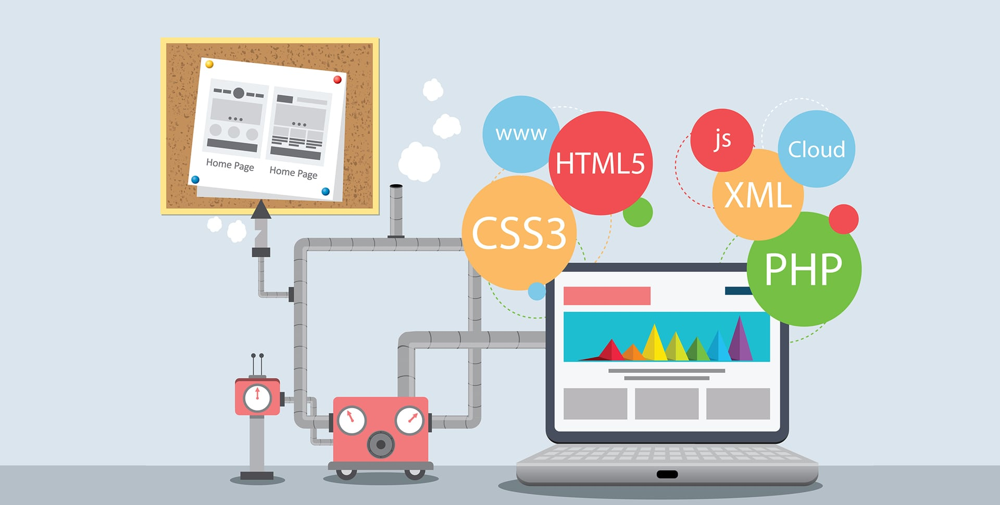

SOBRE MÍ
Explora mi portafolio
Desarrollo Web
Enfoque en crear soluciones robustas y escalables utilizando tecnologías modernas.
Comunicación Efectiva
Capacidad para trabajar en equipo y transmitir ideas técnicas de forma clara.
Calidad de Código
Comprometido con las mejores prácticas, pruebas y escritura de código limpio.
Resolución de Problemas
Habilidad para analizar desafíos complejos y encontrar soluciones eficientes.
ESPECIALIDADES
Áreas de conocimiento técnico
Diseño Frontend
Dominio de HTML5, CSS3 y JavaScript moderno. Experiencia en la creación de interfaces responsivas y adaptables utilizando frameworks como Bootstrap y React. Enfocado en la experiencia de usuario (UX) y el rendimiento del sitio.
Desarrollo Backend
Implementación de lógica de servidor, manejo de bases de datos relacionales (SQL) y desarrollo de APIs RESTful. Comprometido con la seguridad de la información y la escalabilidad de los sistemas.

Desarrollo Móvil
Interés y conocimientos básicos en el desarrollo de aplicaciones para dispositivos móviles, buscando siempre la integración fluida con servicios en la nube y optimización de recursos del dispositivo.

Optimización & QA
Enfoque en la calidad de software a través de pruebas unitarias y optimización de código. Conocimientos en despliegue continuo y mejores prácticas de SEO técnico para visibilidad web.

Inteligencia Artificial
Capacidad analítica, trabajo bajo presión y colaboración en entornos de equipo. Proactivo en el aprendizaje de nuevas tecnologías y resolución creativa de problemas complejos.

Proyectos Terminados
Certificaciones
Tecnologías Dominadas
Horas de Residencia
Tazas de Café
TRABAJOS RECIENTES
Una muestra de mis proyectos destacados

CONTACTO
¿Tienes un proyecto en mente?